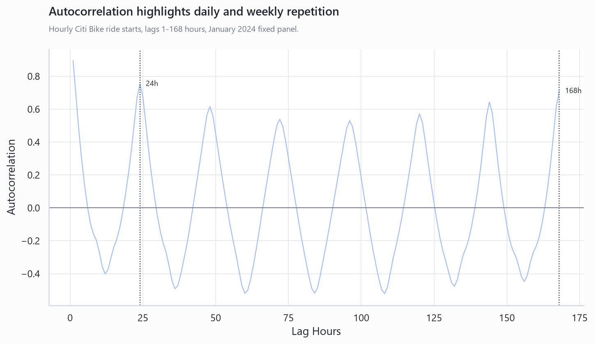
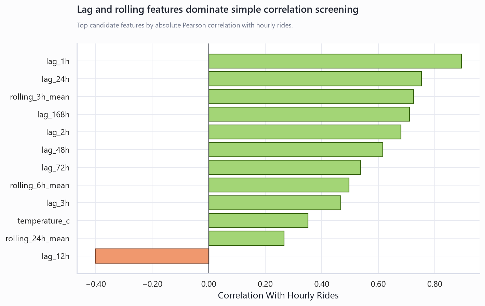
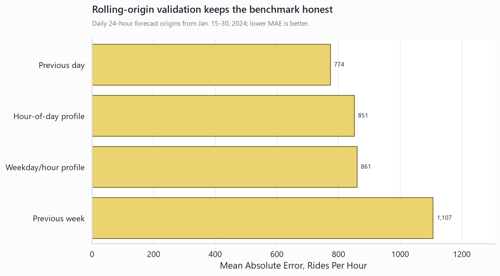
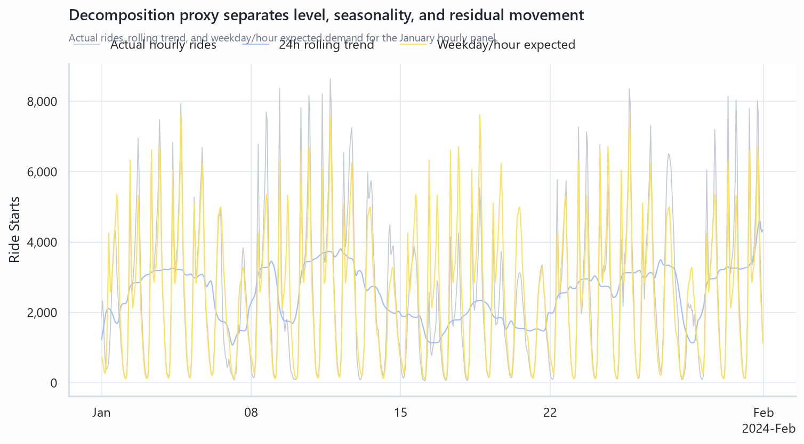
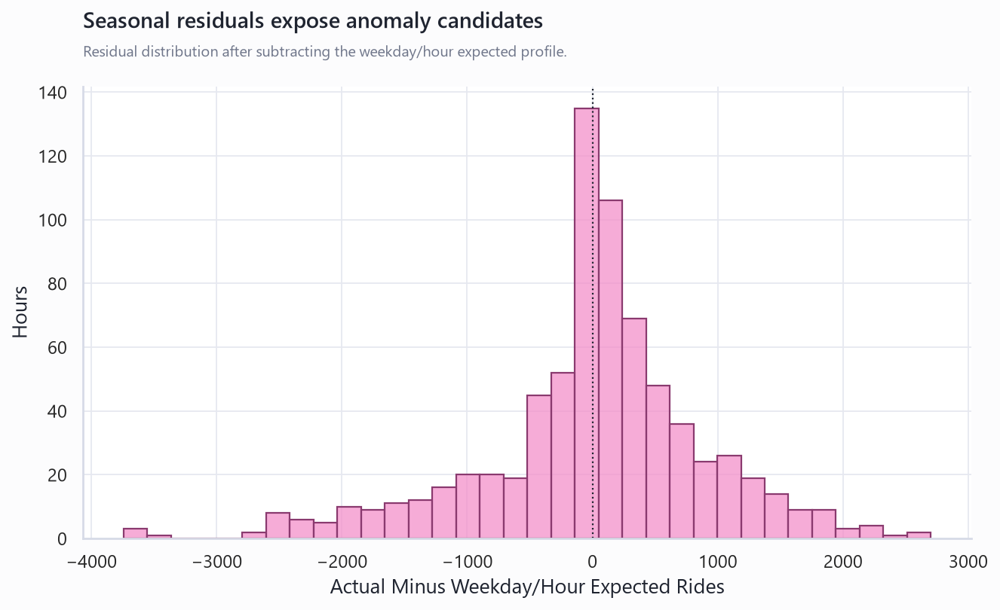

Citi Bike Time-Series Showcase
This companion report turns the January 2024 Citi Bike demand profile into a reviewer-ready time-series case study. It shows how the hourly target is built, which temporal signals appear, how transparent baselines are tested, and where the current one-month scope still limits the claim.
Review Path
Read this report as the methods layer. It proves the project is not just a chart export: it builds a regular hourly index, checks seasonality and autocorrelation, screens lag features, scores leakage-safe rolling baselines, inspects residuals, and documents what remains unproven.
What this proves
- The target grain is explicit: valid trip starts per hour.
- The hourly panel is regular, with no missing or duplicate hours.
- Daily and weekly lag structure is visible before modeling.
- Baselines are scored from history available before each origin.
What it does not prove yet
- Annual seasonality or production forecast stability.
- Causal weather effects or event root causes.
- Station-level performance with stable station identifiers.
- Calibrated prediction intervals.
Showcase Charts





Rolling Backtest Summary
| Model | Origins | Holdout Hours | Mean Actual | MAE | RMSE | MAPE |
|---|---|---|---|---|---|---|
| Previous day | 17 | 408 | 2,389 | 774 | 1,242 | 47.7% |
| Hour-of-day profile | 17 | 408 | 2,389 | 851 | 1,216 | 62.4% |
| Weekday/hour profile | 17 | 408 | 2,389 | 861 | 1,209 | 51.4% |
| Previous week | 17 | 408 | 2,389 | 1,107 | 1,568 | 53.5% |
Time-Series Coverage Map
| Area | Artifact | Status | Reviewer Value | Caveat |
|---|---|---|---|---|
| Regular time index | hourly_profile.csv | Implemented | Shows hourly grain, complete panel, duplicate/missing-hour checks. | Timestamps are parsed as timezone-naive in this version. |
| Resampling and aggregation | citibike_time_series_profile.py | Implemented | Raw trips are transformed into hourly and daily demand measures. | Only trip starts are modeled, not inventory or completions. |
| Calendar features | hourly_profile.csv | Implemented | Weekday, weekend, hour-of-day, and holiday flags support interpretable seasonality. | Holiday list is hand-scoped to January 2024. |
| Seasonality | seasonality_profile.csv | Implemented | Weekday/hour profile demonstrates commute and weekend patterns. | One winter month cannot prove stable annual seasonality. |
| Smoothing and trend | decomposition_components.csv | Implemented | Rolling trend columns separate level from hourly volatility. | This is a descriptive proxy, not formal STL decomposition. |
| Autocorrelation | autocorrelation_profile.csv | Implemented | Lag correlations expose short-memory, daily, and weekly repetition. | ACF is descriptive and should be retested on more months. |
| Lag features | lag_feature_correlations.csv | Implemented | Candidate lags and rolling means are ranked before heavier modeling. | Correlation does not imply out-of-sample lift. |
| Exogenous variables | hourly_profile.csv | Implemented | Weather fields are joined at hourly grain and evaluated descriptively. | Weather is one NYC coordinate, not station-level microclimate. |
| Baseline forecasting | forecast_backtest_metrics.csv | Implemented | Previous-day, previous-week, and calendar-profile baselines establish benchmarks. | Current main report uses a single Jan. 25-31 holdout. |
| Rolling-origin validation | rolling_backtest_metrics.csv | Implemented | Daily rolling 24-hour origins demonstrate stronger forecast evaluation practice. | Still limited to one month of winter behavior. |
| Forecast error metrics | forecast_backtest_metrics.csv | Implemented | MAE, RMSE, MAPE, and mean actuals are reported for transparent model comparison. | MAPE can overemphasize low-volume overnight hours. |
| Residual and anomaly analysis | anomaly_hours.csv | Implemented | Seasonal residuals identify hours worth investigating. | External events, outages, and operations context are needed for root cause. |
| Hierarchy and panels | top_stations.csv | Documented extension | Station rankings show how to evolve from aggregate demand to station-cluster panels. | Station IDs and metadata are required before longitudinal station forecasts. |
| Model governance | MODEL_CARD.md | Implemented | Model card, caveats, and publishing checklist make limitations visible. | Production claims require more history and stronger validation. |
Important Limit
This is still a one-month winter showcase. The strongest next version would extend to 12-24 months, add station IDs and metadata, evaluate rolling holdouts across seasons, and compare these transparent baselines against one stronger model.